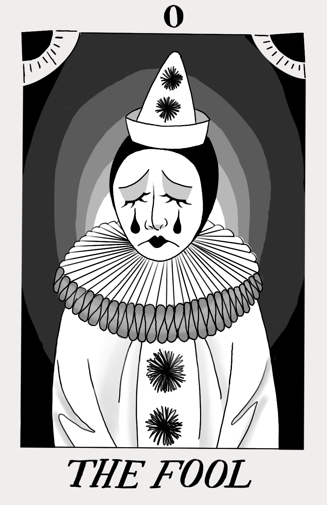
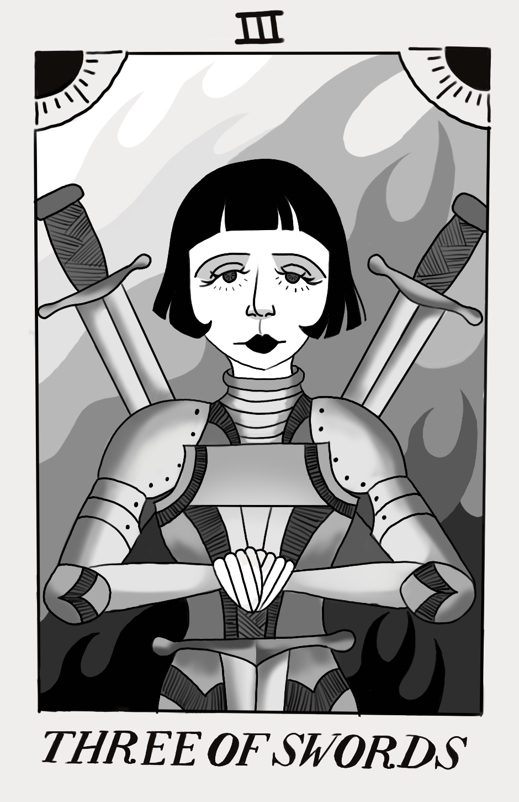
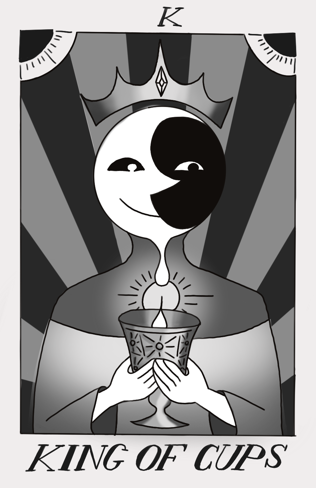
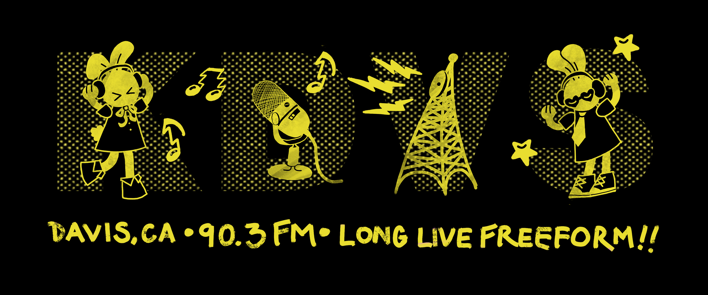

for KDVS 90.3 FM
Keeping freeform radio culture alive at one of the longest running student-run radio stations in the world. I’ve curated music for a weekly radio show, photographed events, and contributed to PR campaigns and a quarterly zine with my some of my favorite people in the world.
OPERATION: RESTORE MAXIMUM FREEDOM
I initiated a collaboration with our award-winning student-run media agency Aggie Studios to cover KDVS’ 60th annual music festival, a community gathering featuring Sacramento’s vibrant indie music scene. That’s me reporting and interviewing!
A History of KDVS
For KDVS' 60th anniversary fundraiser, I collaborated on a community-loved fundraising video produced in just one week, contributing on-screen and behind the scenes with improvised ideas and creative input that reflected the team’s genuine passion.
Illustrations
Designs published in KDViations, the station’s quarterly zine, and created for merchandise sold for station fundraising.




Thanks for reading!
View Additional Projects